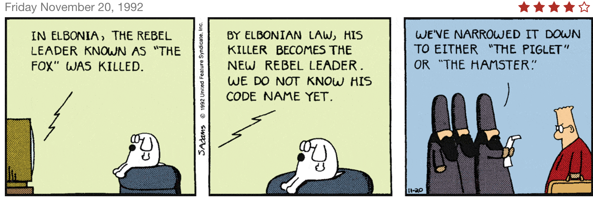

With a rebel yell...
16-May-2017 | Milku
I tried to decide on a better alias than "The Hamster".
I'm often shown Dilbert cartoons. Don't tell anyone, but my humans seem to think that their work places are very similar to Dilbert's! What they don't realise is that the rise of a hamster leader is predicted within the cartoons...
I don't really like to be thought of as a rebel. I might go along with the notion of being a non-conformist, albeit only in a non-religious sense...but I don't want to offend anyone. I'll go with maverick. It makes me think of James Garner, Mel Gibson and Tom Cruise. So you can think of me as a free-thinking heart-throb...I can dream...
It's often thought that you need technology to establish a power base these days. As you can see, I am perfectly placed to assume my predicted leadership role.

However, I think I need a better moniker than "The Hamster". It's a bit too obvious. No butch enough. I'll keep pondering the problem...unless you can think of something appropriate?
Oh, hang on...you don't think Dilbert was foreseeing the rise of Richard Hammond do you? He's good, I'll admit, but he's no rodent. And I do prefer James May... I was looking forward to being in charge too.